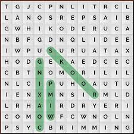
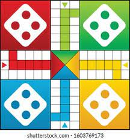
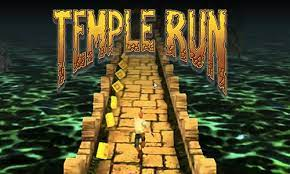
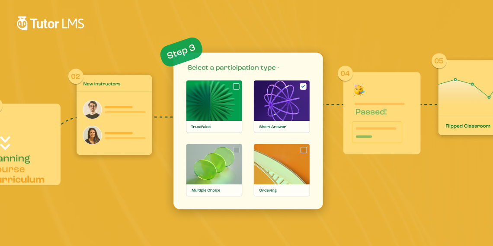

My Name is jagdeep kaur.And from india In addition to it, I belong to sikh family.My family consists of four members.These members are my mother,my father,my brother. My habbies are reading, painting, and learning new things.I like to read novels and history books. I am also an adventorous person who like to take challanges.
Recently i have completed my Master of computer Application From Punjabi University Patalia(India).Nodoubt i have a little bit coding experience but i want to learn more briefly due to this reason i came to canada and take addmission in Game Programming Course At St lwerence College(ONATRIO).Because i know during study i can learn many new things which helps me ti inchance my programming skills.
I love to listen music in my free time because i strongly believe that listening music work as a stress buster activity. My all time favorites singer was sidhu moose wala.
Biography/ Poetry/ Fiction
Water is tasteless, colourless and odourless
I worked as a computer operator in Abhay immigration wHhich is located in bhadaur(Punjab) while preparing for the International English Language Testing System exam My duties were
Determines sequence of operations by studying production schedule. Performs defined tasks per documented instructions/processes. Prepares equipment for operations by accessing software in computer. Makes appropriate changes to the documentation, as needed

| Name | Job | Marital status | |
|---|---|---|---|
| Manpreet Kaur | Staff Writer | Married | Example@gmail.com |
| Kmalpreet Kaur | Marketing Manager | Single | Example1@gmail.com |
| Netika Sharma | CEO | Married | Example2@gmail.com |
| Manjeet Kaur | Bussines Women | Single | Example3@gmail.com |
| Game 1 | Game 2 | Game 3 |
|---|---|---|
|  | ||
|  |  |
Click on Ordering And See the Flower
 click to jump to top